Este paquete contiene funciones útiles para el análisis de datos, principalmente para modelos lineales (LM, GLM, GLMM). Aunque está pensado para usarse en Ciencias Biológicas, su aplicación se extiende a cualquier área del conocimiento que requiera análisis estadísticos. Es una compilación de funciones útiles creadas por mi o por alguien más, que facilitan el análisis de datos: exploración y transformaciones de datos, revisión de los supuestos de los modelos lineales (LM, LMM, GLM, GLMM), exportación de tablas, entre otros.
Para más información sobre el paquete y actualizaciones, visita la página: https://mariosandovalmx.github.io/tlamatini-website/
Si quieres conocer más de mi trabajo, visita mi pagina web: https://mariosandovalmx.github.io/ecology/
Para este ejemplo sobre como usar Tlamatini, vamos a usar una base ded datos que contiene la longitud hocico-cloaca de lagartijas de la especie Sceloporus torquatus en cuatro localidades distintas, que vamos a llamar A, B, C y D. Además contiene la velocidad de desplazamiento y el tiempo de reacción de cada lagartija.
La base de datos se puede descargar del siguiente enlace: descargar datos
Vamos a cargar la base de datos:
df <- read.csv("https://raw.githubusercontent.com/mariosandovalmx/examples-data/main/datos.GLM1.csv", header=TRUE)##Exploración de datos Así luce nuestra base de datos:
head(df)
#> LHC Velocidad Tiempo Localidad
#> 1 8.362033 5.625505 7.632080 Localidad_A
#> 2 11.762914 3.847125 6.518618 Localidad_D
#> 3 9.119546 6.067273 9.053450 Localidad_A
#> 4 10.207365 5.128038 7.369430 Localidad_C
#> 5 11.480672 3.274195 5.931493 Localidad_D
#> 6 9.837144 5.588090 8.415775 Localidad_BPara este ejemplo vamos a comenzar cargando la paqueteria.
library(tlamatini)
#> Registered S3 method overwritten by 'GGally':
#> method from
#> +.gg ggplot2
#>
#>
#> ##~~~~~~~~~~~~~~~~~~~~~~~~~~~~~~~~~~~~~~~~~~~~~~~~~~~~~~~~~~~~~~~~~~~~~~~~~~~~~~
#> ## Tlamatini - R package ----
#> ##~~~~~~~~~~~~~~~~~~~~~~~~~~~~~~~~~~~~~~~~~~~~~~~~~~~~~~~~~~~~~~~~~~~~~~~~~~~~~~
#>
#> El paquete Tlamatini se ha cargado con éxito. ¡Espero que lo disfrutes!
#> Actualizaciones y más información en:
#>
#> https://mariosandovalmx.github.io/tlamatini-website/
#>
#> Email de contacto: sandoval.m@hotmail.com
#> Para citar este paquete: Mario A. Sandoval-Molina (2021). tlamatini: Funciones utiles
#> para biologxs y ecologxs confundidos con los modelos lineales. R package. https://doi.org/10.5281/zenodo.7765347Vamos a comenzar a convertir todas las variables categoricas a factor. Esta función nos va a reconocer todas las variables que son tipo caracter y las va a codificar como factor. Nota: no funciona si la columna es numérica.
df<- as_factorALL(df)
#> Todas las columnas tipo caracter convertidas a factoresVamos a explorar si hay datos faltantes en las variables numéricas, tambien vemos la media, el mínimo y máximo de cada variable, además de otros parámetros.
numSummary(df)
#> n media sd max min rango nunicos nceros iqr limitinferior
#> LHC 100 10.05 1.048 13.10 7.78 5.32 100 0 1.51 7.02
#> Velocidad 100 4.97 0.945 6.99 2.35 4.64 100 0 1.23 2.50
#> Tiempo 100 7.48 0.913 9.93 4.94 4.98 100 0 1.16 5.12
#> limitesuperior noutlier kurtosis asimetria mode faltantes %faltantes
#> LHC 13.10 1 -0.2902 0.179 8.36 0 0
#> Velocidad 7.39 1 -0.0435 -0.236 5.63 0 0
#> Tiempo 9.71 2 0.1473 -0.026 7.63 0 0
#> 1% 5% 25% 50% 75% 95% 99%
#> LHC 7.90 8.35 9.29 9.96 10.82 11.76 12.03
#> Velocidad 2.84 3.34 4.35 5.07 5.55 6.60 6.86
#> Tiempo 5.44 6.00 6.85 7.53 7.97 8.91 9.59También podemos explorar las variables categóricas:
charSummary(df)
#> n faltantes %faltantes unique
#> E 100 0 0 4
#> top5:conteos
#> E Localidad_A:25, Localidad_B:25, Localidad_C:25, Localidad_D:25¡No hay datos faltantes en las variables!
También nos interesa saber cómo se relacionan las variables explicativas con nuestra variable de respuesta, en este caso la longitud hocico cloaca. Para ello usamos la función ggpairs_dfnum, que nos da el valor de correlación y el valor de p. Como vemos en la gráfica, la velocidad de desplazamiento de las lagartijas se correlaciona negativamente con la longitud hocico cloaca. También vemos que el tiempo de reacción se correlaciona negativamente con la LHC.
ggpairs_dfnum(df, var.response = "LHC")
#> `geom_smooth()` using formula = 'y ~ x'
#> `geom_smooth()` using formula = 'y ~ x'
#> `geom_smooth()` using formula = 'y ~ x'
#> `geom_smooth()` using formula = 'y ~ x'
#> `geom_smooth()` using formula = 'y ~ x'
#> `geom_smooth()` using formula = 'y ~ x'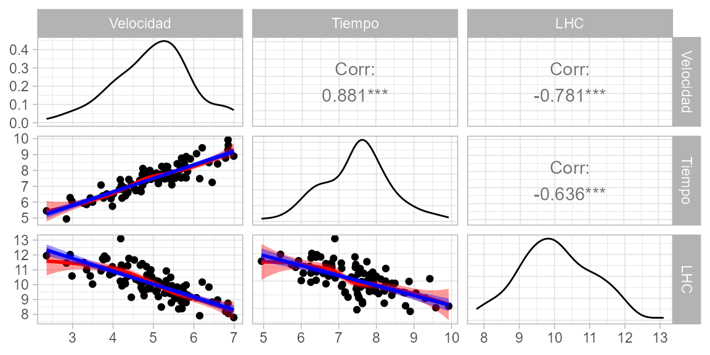
Ahora vamos a graficar la LHC por Localidad, para ello usaremos la paquetería ggpubr:
library(ggpubr)
#> Loading required package: ggplot2
ggboxplot(df, "Localidad", "LHC",
color = "Localidad", palette =c("#00AFBB", "#E7B800", "#FC4E07", "darkblue"),
add = "jitter", fill = "Localidad", alpha= 0.5)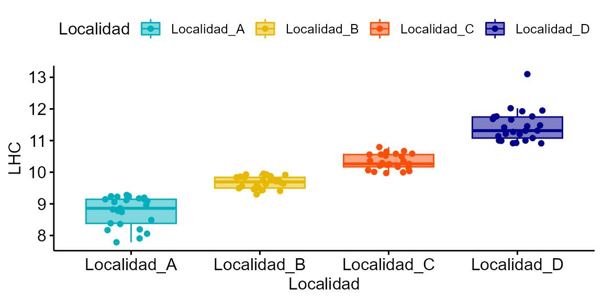 Y si quisiéramos saber que si nuestra variable de respuesta sigue una distribución normal podemos hacer un histograma de frecuencias. Para ello usamos la función hist_curva.
hist_curva(df$LHC)
#> Prueba de normalidad
#> Asymptotic one-sample Kolmogorov-Smirnov test
#>
#> data: variable
#> D = 0.05, p-value = 1
#> alternative hypothesis: two-sided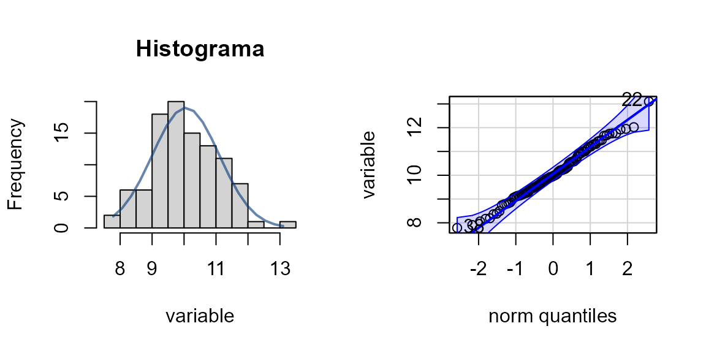
#> [1] 22 38Lo podemos ver más claramente en el histograma de frecuencuas y en el qqplot. La prueba de Kolmogorov-Smirnov indica que no la distribución es parecida a la normal. Además nos dice que hay dos datos extremos, el 22 y 38.
Podemos ajustar un modelo lineal generalizado (GLM). Con esta base de datos vamos a ajustar dos modelos lineales generalizados, el primero con la distribución gaussiana y logaritmo como función de liga. El segundo con distribución gaussiana y función de liga identity. Usaremos la Velocidad como variable de respuesta. Además, usaremos la variable longitud hocico-cloaca (LHC) y Localidad como variables explicativas.
modelo <- glm(Velocidad ~ LHC + Localidad, family = gaussian("log"), data= df)
modelo2 <- glm(Velocidad ~ LHC + Localidad, family = gaussian("identity"), data= df)
AIC(modelo, modelo2)
#> df AIC
#> modelo 6 187
#> modelo2 6 188De acuerdo con el Criterio de información de Akaike, el modelo 2 es mejor. Vamos a ver el summary del modelo:
summary(modelo2)
#>
#> Call:
#> glm(formula = Velocidad ~ LHC + Localidad, family = gaussian("identity"),
#> data = df)
#>
#> Deviance Residuals:
#> Min 1Q Median 3Q Max
#> -1.5026 -0.3550 0.0152 0.3990 1.4295
#>
#> Coefficients:
#> Estimate Std. Error t value Pr(>|t|)
#> (Intercept) 12.1262 1.4453 8.39 4.5e-13 ***
#> LHC -0.7111 0.1643 -4.33 3.7e-05 ***
#> LocalidadLocalidad_B 0.0388 0.2249 0.17 0.86
#> LocalidadLocalidad_C -0.1160 0.3070 -0.38 0.71
#> LocalidadLocalidad_D 0.0556 0.4718 0.12 0.91
#> ---
#> Signif. codes: 0 '***' 0.001 '**' 0.01 '*' 0.05 '.' 0.1 ' ' 1
#>
#> (Dispersion parameter for gaussian family taken to be 0.358)
#>
#> Null deviance: 88.373 on 99 degrees of freedom
#> Residual deviance: 34.001 on 95 degrees of freedom
#> AIC: 187.9
#>
#> Number of Fisher Scoring iterations: 2La velocidad es significativa p<0.001, al igual que los niveles del factor Localidad.
Vamos a revisar el ajuste del modelo. Esto lo podemos hacer con la función resid_glm.
resid_glm(modelo3)
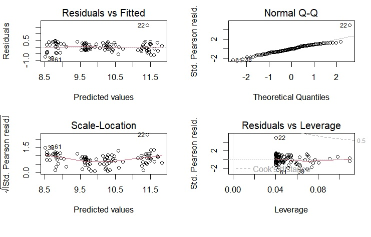
En la primera gráfica, la línea roja es horizontal y aplanada sobre la línea punteada, indica buen ajuste, homocedasticidad. El QQPlot se ve bien, la mayoría de los puntos se ajustan a la línea punteada, lo cual indica que los residuales se aproximan a la distribución normal.
Y otra forma de explorar los residuales del modelo es usando la función resid_DHARMa, que muestra la normalidad, la dispersión y los outliers. En la segunda gráfica se muestra la homocedasticidad:
resid_DHARMa(modelo2)
#> Si Kolmogorov-Smirnov test (KS test) p < 0.05, entonces no hay normalidad en los residuales. Sin embargo, esta prueba es muy sensible al tamaño de muestra, con tamaño de muestra grande el valor de p tiene a < 0.05, pero la distribución se aproxima mucho a la normal. Se recomienda ser un poco flexible con esta prueba al momento de examinar los residuales (examinar visualmente). Con tamaños de muestra grandes mayores a 500 el Teorema del Limite Central garantiza que los coeficientes de regresión se distribuyen normalmente en promedio (Ali & Sharma, 1996, Lumley et al., 2002).Outlier test: p < 0.05, no hay outliers. En caso de haber outliers, usar la función outliers.DHARMa para saber cuáles son los datos influyentes.Dispersion test: p < 0.05, Indica problemas de sub/sobredispersión. En caso de haber problemas se recomienda ajustar el parámetro dispformula, solo para la paquetería glmmTMB.Gráfico de la derecha muestra la distribución esperada de los residuales, mediante simulaciones. Esto es útil cuando no sabemos cuál es la distribución nula de los residuales. El grafico de la derecha muestra los residuales contra los valores esperados (ajustados). Estas líneas pueden no ajustarse debido a un tamaño de muestra reducido.Recuerda citar el paquete DHARMa. Usa citation('DHARMa') para ver como citar este paquete.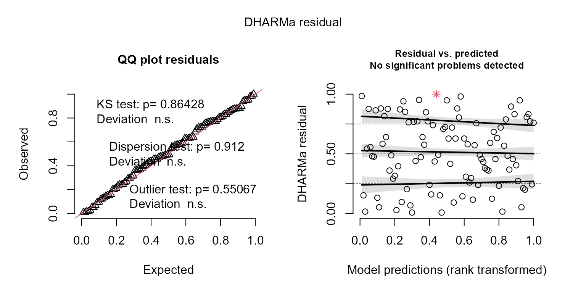 Parece que hay dos posibles outliers. Vamos a comprobarlo:
outliers.plot(modelo2)
#> ################################################################################################
#> Observaciones con std.resid (residuales estandarizados) > 3, son consideradas valores atípicos. Index es número de fila donde se encuentra la observación.
#> ################################################################################################
#> # A tibble: 0 × 10
#> # ℹ 10 variables: Velocidad <dbl>, LHC <dbl>, Localidad <fct>, .fitted <dbl>,
#> # .resid <dbl>, .hat <dbl>, .sigma <dbl>, cooksd <dbl>, StdResid <dbl>,
#> # outlierID <int>
#> ################################################################################################
#> En el gráfico de la derecha se marcan en rojo las observaciones influyentes.No todos los outliers son observaciones influyentes. Para revisar que los datos contienen potenciales datos influyentes, se puede inspeccionar los residuales estandarizados. Datos con residuales estandarizados absolutos mayores a 3 representan posibles outliers y merecen atención. Sugerencia: 1) remover, 2)transformar los datos, 3) usar métodos no paramétricos. A continuación se hace una prueba Bonferroni para cada dato identificado como outlier.
#> ################################################################################################
#> No Studentized residuals with Bonferroni p < 0.05
#> Largest |rstudent|:
#> rstudent unadjusted p-value Bonferroni p
#> 23 -2.65 0.00804 0.804
#> ################################################################################################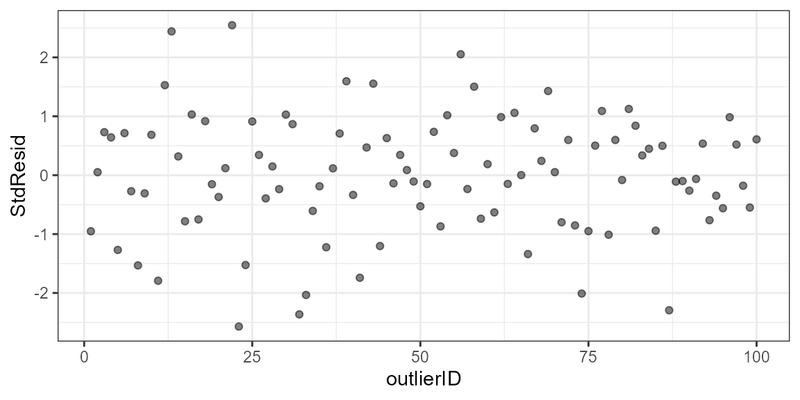 El dato que se encuentra en la fila 22 es un outlier. Según esta función, el dato que se encuentra en la fila 22 tiene un valor de std.resid mayor a 3, y el valor de p con ajuste de Bonferroni es < 0.05, lo que nos indica que puede ser un dato influyente y tenemos que revisar esta observación. Tendremos que corroborar que esta observación es correcta y no cometimos nungún error al capturar nuestros datos. Vamos a suponer que fue un error de medición y no podemos confiar en este dato, y no hay forma de repetir la medición. Así que lo vamos a remover y volver a ajustar el modelo:
library(dplyr)
#>
#> Attaching package: 'dplyr'
#> The following objects are masked from 'package:stats':
#>
#> filter, lag
#> The following objects are masked from 'package:base':
#>
#> intersect, setdiff, setequal, union
df2 <- slice(df, -c(22))
modelo3 <- glm(LHC ~ Velocidad + Localidad, family = gaussian("identity"), data= df2)
summary(modelo3)
#>
#> Call:
#> glm(formula = LHC ~ Velocidad + Localidad, family = gaussian("identity"),
#> data = df2)
#>
#> Deviance Residuals:
#> Min 1Q Median 3Q Max
#> -0.8020 -0.1926 -0.0088 0.2374 0.4894
#>
#> Coefficients:
#> Estimate Std. Error t value Pr(>|t|)
#> (Intercept) 10.1718 0.2778 36.62 < 2e-16 ***
#> Velocidad -0.2382 0.0461 -5.17 1.3e-06 ***
#> LocalidadLocalidad_B 0.7587 0.0876 8.66 1.3e-13 ***
#> LocalidadLocalidad_C 1.2676 0.1005 12.62 < 2e-16 ***
#> LocalidadLocalidad_D 2.1702 0.1199 18.10 < 2e-16 ***
#> ---
#> Signif. codes: 0 '***' 0.001 '**' 0.01 '*' 0.05 '.' 0.1 ' ' 1
#>
#> (Dispersion parameter for gaussian family taken to be 0.0864)
#>
#> Null deviance: 99.4575 on 98 degrees of freedom
#> Residual deviance: 8.1203 on 94 degrees of freedom
#> AIC: 45.38
#>
#> Number of Fisher Scoring iterations: 2En el modelo sigue siendo significativa la variable Velocidad.
Revisamos los residuales de este nuevo modelo…
resid_DHARMa(modelo3)
#> Si Kolmogorov-Smirnov test (KS test) p < 0.05, entonces no hay normalidad en los residuales. Sin embargo, esta prueba es muy sensible al tamaño de muestra, con tamaño de muestra grande el valor de p tiene a < 0.05, pero la distribución se aproxima mucho a la normal. Se recomienda ser un poco flexible con esta prueba al momento de examinar los residuales (examinar visualmente). Con tamaños de muestra grandes mayores a 500 el Teorema del Limite Central garantiza que los coeficientes de regresión se distribuyen normalmente en promedio (Ali & Sharma, 1996, Lumley et al., 2002).Outlier test: p < 0.05, no hay outliers. En caso de haber outliers, usar la función outliers.DHARMa para saber cuáles son los datos influyentes.Dispersion test: p < 0.05, Indica problemas de sub/sobredispersión. En caso de haber problemas se recomienda ajustar el parámetro dispformula, solo para la paquetería glmmTMB.Gráfico de la derecha muestra la distribución esperada de los residuales, mediante simulaciones. Esto es útil cuando no sabemos cuál es la distribución nula de los residuales. El grafico de la derecha muestra los residuales contra los valores esperados (ajustados). Estas líneas pueden no ajustarse debido a un tamaño de muestra reducido.Recuerda citar el paquete DHARMa. Usa citation('DHARMa') para ver como citar este paquete.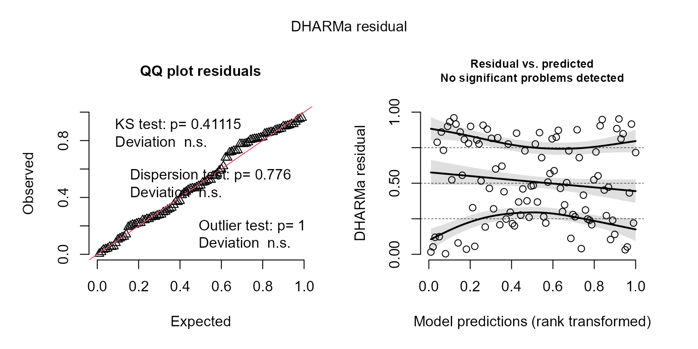
Comprobamos si aún tenemos outliers en el nuevo modelo:
outliers.plot(modelo3)
#> ################################################################################################
#> Observaciones con std.resid (residuales estandarizados) > 3, son consideradas valores atípicos. Index es número de fila donde se encuentra la observación.
#> ################################################################################################
#> # A tibble: 0 × 10
#> # ℹ 10 variables: LHC <dbl>, Velocidad <dbl>, Localidad <fct>, .fitted <dbl>,
#> # .resid <dbl>, .hat <dbl>, .sigma <dbl>, cooksd <dbl>, StdResid <dbl>,
#> # outlierID <int>
#> ################################################################################################
#> En el gráfico de la derecha se marcan en rojo las observaciones influyentes.No todos los outliers son observaciones influyentes. Para revisar que los datos contienen potenciales datos influyentes, se puede inspeccionar los residuales estandarizados. Datos con residuales estandarizados absolutos mayores a 3 representan posibles outliers y merecen atención. Sugerencia: 1) remover, 2)transformar los datos, 3) usar métodos no paramétricos. A continuación se hace una prueba Bonferroni para cada dato identificado como outlier.
#> ################################################################################################
#> No Studentized residuals with Bonferroni p < 0.05
#> Largest |rstudent|:
#> rstudent unadjusted p-value Bonferroni p
#> 60 -2.89 0.0038 0.376
#> ################################################################################################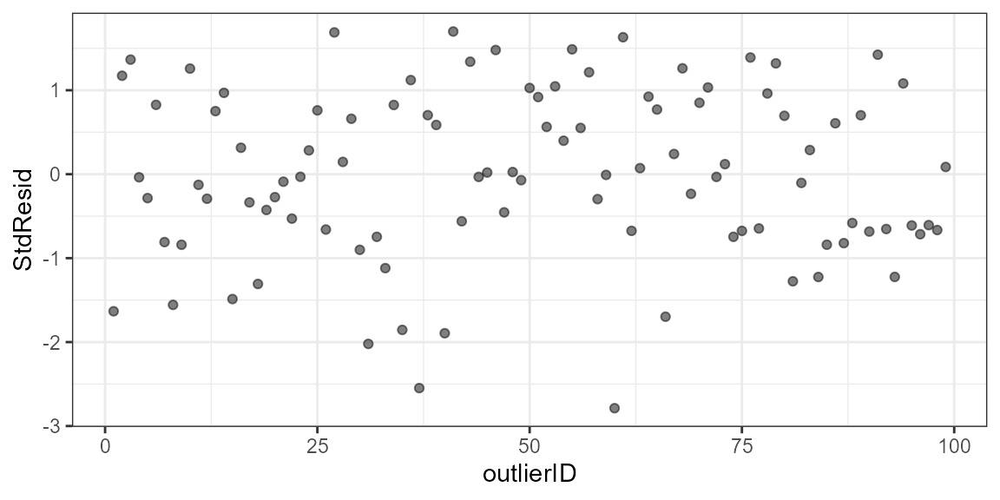 Ya no tenemos outliers, lo ideal es remover el menor número posible de observaciones. El modelo tiene buen ajuste.
Ambas variables Velocidad y Localidad son significativas en el modelo. El ANOVA tipo III sirve para examinar la importancia de cada efecto parcial, es decir, la importancia de un efecto con todos los demás efectos del modelo. Y vamos a graficar los efectos del modelo:
plot_effects(modelo3)o bien:
plot_effects2(modelo3)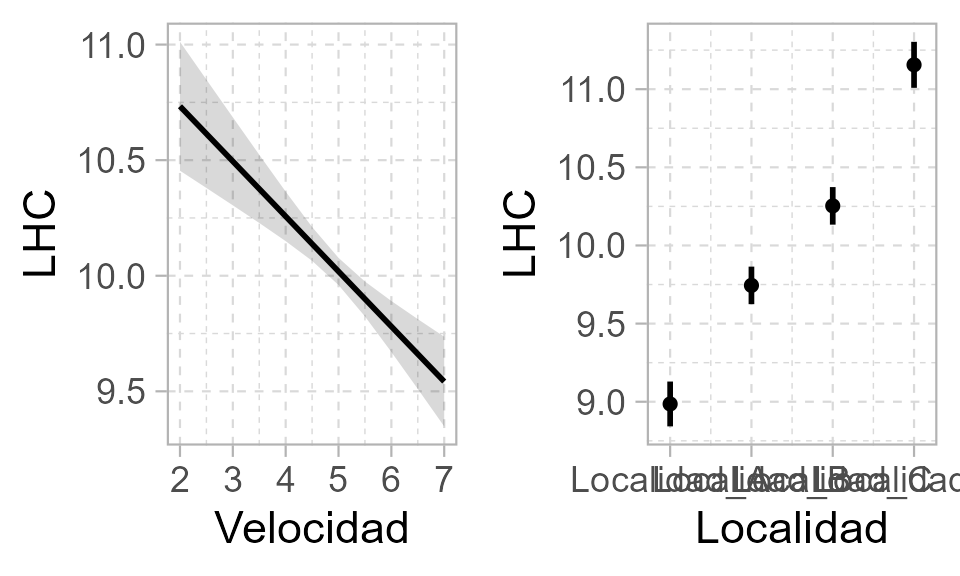
Los efectos también los podemos graficar usando la paquetería ggeffects.
 Podemos usar los diferentes temas predefinidos para artículo científico o para presentación.
pl <- plot(dat)
pl + tema_articulo()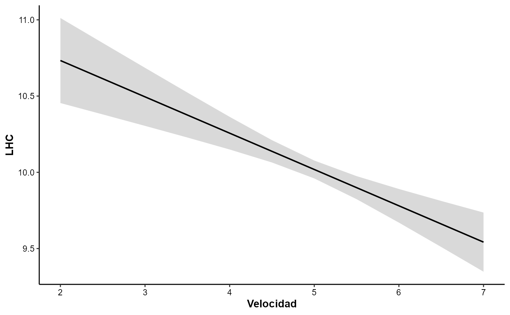
#pl + tema_articulo(14,14)
#pl + tema_articulo2()
#pl + tema_presentacion()Ahora vamos a obtener la tabla de ANOVA tipo III, los contrastes post-hoc Tukey y la tabla del modelo. De esta forma podremos copiar las tablas y pegarlas directamente en nuestro documento de Word. Primero vamos a obtener la tabla de ANOVA tipo III:
table_ANOVA3(modelo3)| Variables | LR.Chisq | DF | P.value | |
|---|---|---|---|---|
| Velocidad | 26.72 | 1 | <0.001 *** | |
| Localidad | 330.95 | 3 | <0.001 *** | |
| <0.001 ‘’ 0.001 ‘’ 0.01 ‘’ 0.05 ‘.’ | ||||
Ahora vamos a obtener los contrastes post-hoc Tuckey, usamos la paquetería emmeans. Primero se muestran las medias, error estandar y los intervalos de confianza. Luego se muestran los contrastes entre localidades, con el valor del estadistico y el valor de p:
library(emmeans)
cont1 <- emmeans(modelo3, pairwise ~ Localidad,adjust="tukey",type="response")$contrasts
table_contrasts(cont1)| contrast | estimate | SE | df | t.ratio | p.value | |
|---|---|---|---|---|---|---|
| Localidad_A - Localidad_B | -0.750 | 0.087 | 94 | -8.650 | <0.001 *** | |
| Localidad_A - Localidad_C | -1.260 | 0.100 | 94 | -12.600 | <0.001 *** | |
| Localidad_A - Localidad_D | -2.170 | 0.119 | 94 | -18.000 | <0.001 *** | |
| Localidad_B - Localidad_C | -0.500 | 0.087 | 94 | -5.780 | <0.001 *** | |
| Localidad_B - Localidad_D | -1.410 | 0.101 | 94 | -13.800 | <0.001 *** | |
| Localidad_C - Localidad_D | -0.900 | 0.088 | 94 | -10.100 | <0.001 *** | |
| <0.001 ‘’ 0.001 ‘’ 0.01 ‘’ 0.05 ‘.’ | ||||||
Y finalmente vamos a obtener la tabla del modelo.